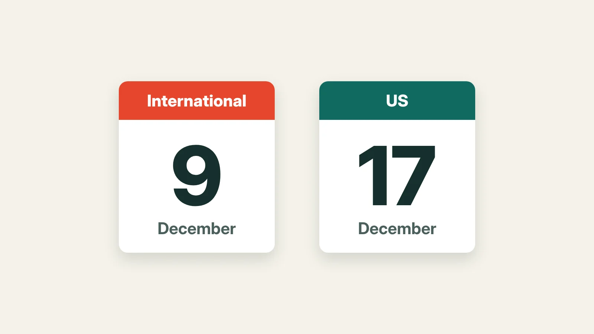

Marketplaces desk · Etsy
Shipping abroad for Christmas? USPS's send-by date is December 9, eight days before the US one
If you ship Christmas orders abroad by USPS Priority Mail International or First-Class Package International, USPS's recommended send-by date is Wednesday, December 9, eight days before its US Ground Advantage date. With a 3-day processing time, that points to a last order day of Friday, December 4. Here are the dates, and what to change in your shop this week.

The short version: If you ship Christmas orders abroad by USPS Priority Mail International or First-Class Package International, USPS recommends sending them by Wednesday, December 9. That's eight days before its December 17 date for US Ground Advantage. With a 3-day processing time, it points to a last international order day of Friday, December 4, about three weeks from now.
Who can ignore this: shops that only ship within the US, and shops that only sell digital downloads.
The dates, from USPS
USPS's holiday page lists one set of dates for every overseas region, from Canada and Mexico to Europe, Asia and Australia. They're the latest dates USPS recommends for delivery before Christmas, not a guarantee of arrival:
| Service | Send by |
|---|---|
| First-Class Package International Service | Wed, Dec 9 |
| Priority Mail International | Wed, Dec 9 |
| Priority Mail Express International | Wed, Dec 16 |
For comparison, US Ground Advantage is December 17 and Priority Mail is December 18. Our earlier Deadline Watch story has the full US table.
The part most sellers miss
The date on the table is when the parcel should leave, not when the buyer should order. Etsy's delivery estimate is your processing time plus the carrier's transit time, so count back from December 9 by your processing time.
Counting Monday to Friday only:
| Your processing time | Last international order day |
|---|---|
| 1 working day | Tue, Dec 8 |
| 2 working days | Mon, Dec 7 |
| 3 working days | Fri, Dec 4 |
| 5 working days | Wed, Dec 2 |
So a shop with 5 working days of processing should stop promising Christmas delivery abroad on December 2. That's the day after Etsy's Cyber Specials sale ends.
Paying for Priority Mail Express International buys you a week. The send-by date moves to December 16, but the postage costs much more, so check a quote before you offer it.
Military addresses
USPS also lists dates for APO, FPO and DPO addresses. For those, First-Class Mail and Priority Mail should go by December 9. Priority Mail Express Military should go by December 16, but it isn't offered to ZIP codes starting 093, and only some post offices take it.
The Ground Advantage date for those addresses was November 4. It has already passed.
What to do this week
- Find your last international order day in the table above, using your longest processing time.
- Check your shipping settings. On Etsy, open Settings, then Shipping settings, and check your international services and processing times. Etsy builds each buyer's delivery estimate from these, so a notice alone won't change it.
- Say it in your shop. Add an "order by" line for buyers abroad to your shop announcement and your top listings, with the time zone, such as "Order by 5pm Eastern, Friday, December 4".
- Fill in customs forms fully and check USPS's international service alerts for your buyers' countries before you post.
What's still unknown: how busy customs will be this December. USPS says its dates can change, and customs checks can add days that no buffer can promise to cover.
What we checked: USPS's 2026 holiday shipping page, read on November 10, 2026, and its international service alerts page, read on November 11. USPS's September 22 announcement still carries a banner about suspended mail to Canada. It matches USPS's notice from the 2024 Canada Post strike, and Canada isn't on USPS's current list of suspended destinations, updated November 6. If you ship to Canada, check that list again before you post. All sources are listed below.
Sources, checked 11 Nov 2026
- USPS, '2026 Holiday Shipping Deadlines' (domestic, international and military tables), read 10 Nov 2026. usps.com
- USPS, 'USPS recommends 2026 holiday mailing and shipping dates', 22 Sep 2026, read 10 Nov 2026. about.usps.com
- USPS, 'International Service Alerts', read 11 Nov 2026. about.usps.com
- Etsy Help, 'What is an Estimated Delivery Date', read 22 Oct 2026. help.etsy.com
Applies to: US sellers who ship orders outside the US, or to military addresses, with USPS for Christmas 2026.
How this was made: researched from the sources below, checked claim by claim and edited by Drew Halden. Editorial responsibility: ePORTS LLC. Nothing here is legal, tax or financial advice. Spotted an error? Tell us and we'll correct it on this page.